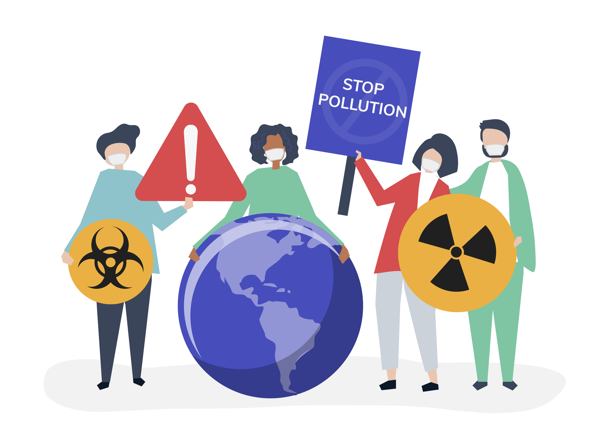
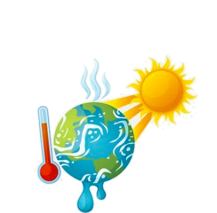
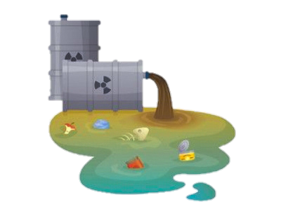
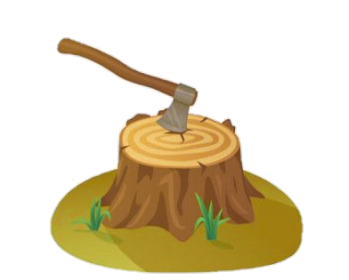
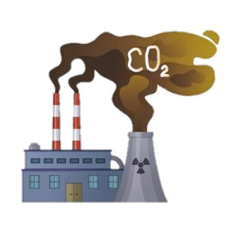
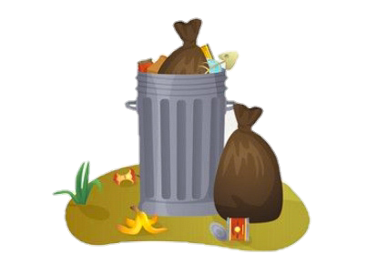
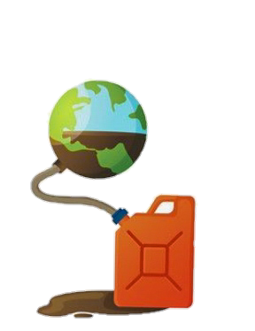
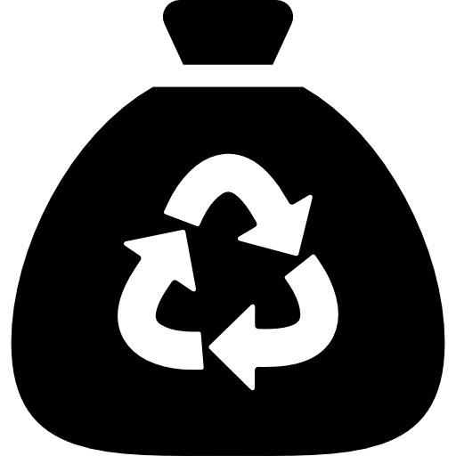

Over 80% of iteams buried in landfills could be srecycled instead
Saving nature
for sustainable future
Let's fulful our social responsibility and contribute in protecting nature.

What is it environmental issues?
Environmental issues are defined as problems with the planet's systems (air, water, soil, etc.) that have developed as a result of human interference or mistreatment of the planet.
Why each person shoud start acting?
There is a quote "If you want to change the world start from yourself", which means ,firstly, everyone need to chenge his mindset, rethink actions and habits. Only then there will be hope for a great future.
Several pressing eco problems

Climate change
Statistics created by NASA state that global temperatures have risen by 1.7 degrees Fahrenheit since 1880, which is directly linked to a reduction in Arctic ice of 13.3% per decade. The effects of climate change are widespread, as it will cause issues with deforestation, water supplies, oceans and ecosystems.

Water pollution
On a global scale, 2 million tons of sewage, agricultural and industrial waste enters the world’s water every day. Water pollution can have harmful effects outside of contamination of the water we drink. It also disrupts marine life, sometimes altering reproductive cycles and increasing mortality rates.

Deforestation
Current estimates state that the planet is losing 80,000 acres of tropical forests per day. This results in loss of habitat for many species, placing many at risk and leading to large-scale extinction. Furthermore, deforestation is estimated to produce 15% of the world’s greenhouse gas emissions.

Air pollution
The World Health Organization has found that 80% of people living in urban areas are exposed to air quality levels deemed unfit by the organization. It is also directly linked to other environmental issues, such as acid rain and eutrophication. Animals and humans are also at risk of developing a number of health problems due to air pollution.

Waste disposal
The average person produces 4.3 pounds of waste per day. Much of this waste ends up in landfills, which generate enormous amounts of methane. Not only does this create explosion hazards, but methane also ranks as one of the worst of the greenhouse gases because of its high global warming potential.

Natura resourses depletion
Every year, the world uses 35 billion barrels of oil; in one day 82,8 million. This massive scale of fossil fuel dependence pollutes the Earth and it will not last forever. Scientists estimate that people have consumed about 40% of the world’s oil.
Interesting facts:

14 billion pounds of garbage, mostly plastic, is dumped into the ocean every year
Recycling a single run of the Sunday New York Times saves 75,000 trees

The avarage office employee throws away 360 pounds of recycable paper eaach year.
About climate change:
Environmental issues in my country
I live in Uzbekistan, a country situated in Central Asia. One of the most serious eco problems here is the evaporation of the Aral sea.
The Aral Sea is used to be unique, beautiful and one of the largest water reservoirs in the world, also was a region with a wide variety of flora and fauna. Moreover, it played an important role in the development of the region's economy, in ensuring employment of the population, and in the formation of a stable social infrastructure.
The sea also served as a climate-adjusting reservoir and mitigated the sharp weather fluctuations throughout the region.
But nowadays it is a new salt desert and on the verge of complete disappearance. In 1960 the problem of the Aral Sea arose and took on alarming proportions as a result of thoughtless regulation of the major rivers of the region- the Syrdarya and the Amudarya.
The significant growth of the population living in this area, the scale of urbanization and intensive development of lands, the construction of large hydro-technical and irrigation facilities on the watercourses of the Aral Sea basin in the past, without taking into account the environmental consequences, created the conditions for desiccation of one of the most beautiful reservoirs on the planet.
A direct consequence were dramatic climate change, ecosystem was severly degraded, wild life habitat was destroyed, also over 90 days a year there are sandstorms, which spread about 100 million tons of dust and poisonous salt into the atmosphere.